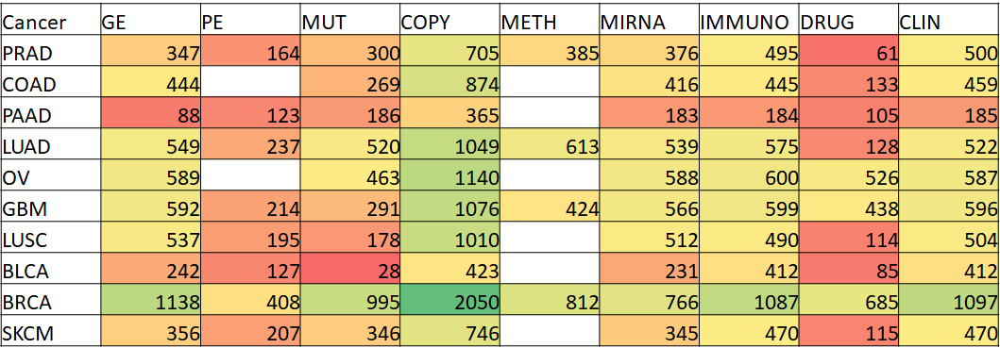

Server EviCor was created to provide the biomedical research community with a handy tool for quick look-up at data from large public repositories, The Cancer Genome Atlas (TCGA) and The Cancer Cell Line Encyclopedia (CCLE), and accompanying data on the same samples from other sources, as well as mining basic functional relations via statistical and network tools. None of alternative online resources, to the best of our knowledge, combines quick data access, advanced visualization, and results of correlation and network analysis of the primary data, especially in what concerns response to anti-cancer drugs. In particular, project-specific web sites do not provide an easy way to cross-check findings in alternative in vitro screens and cohorts. EviCor thus represents a first-line tool to test suggested molecular “biomarkers” via biological and statistical validation. It also enables access to pathway-level sample profiles via network enrichment analysis and visualizes it via sub-network views of the pathway correlates. EviCor provides both pre-calculated lists of correlates and direct access to the datasets.
The data integration using global gene networks has the following strengths:
Our work demonstrated advantage of network enrichment analysis (NEA) scores over single gene/protein profiles. The same was true in a comparison against enrichment scores produced by other methods. This was proved in terms of robustness and reproducibility in independent datasets and cohorts:
Marcela Franco, Ashwini Jeggari, Sylvain Peuget, Franziska Böttger, Galina Selivanova, Andrey Alexeyenko Prediction of response to anti-cancer drugs becomes robust via network integration of molecular data Sci Rep 9, 2379 (2019) doi: 10.1186/1471-2105-13-226.
We provide correlates based on the NEA scores in parallel with original gene/protein level data from CCLE and TCGA. Compared to the latter, NEA-based datapoins at the plots are clickable which provides a network context view on the gene sets.
Ten biggest TCGA cohorts with all their major omics datasets over most of the patient line samples are accompanied with patients' clinical records. In addition, TCGA-based PanCancer projects provided extra data from e.g. leucocyte counts from in silico image analysis over the same samples (Saltz et al., 2018).
Omics platforms used by TCGA
No. of samples in TCGA cohort, per omics platform

The CCLE collection of over 1000 cancer cell lines contains both omics (gene expression, gene copy number, point mutation and proteomics) data and results of three large-scale in vitro drug screens, which inluded more than 600 approved and experimental drugs in total:
| Type | Platform | No. of genes | No. of cell lines | Source |
|---|---|---|---|---|
| GE | RNAseq | 17893 | 1201 | CCLE |
| GE | Affymetrix1 | 18900 | 1034 | CCLE (Barretina et al., 2012) |
| GE | Affymetrix2 | 13981 | 622 | GDSC |
| MUT | CCLE_EXOME_2019 | 19525 | 1631 | CCLE |
| MUT | CCLE_TARGET_2012 | 1667 | 904 | CCLE (Barretina et al., 2012) |
| MUT | COSMIC_EXOME_2014 | 19759 | 1023 | COSMIC |
| COPY | SNP6 | 21217 | 994 | CCLE (Barretina et al., 2012) |
| COPY | GDSC | 25638 | 987 | GDSC (Iorio et al., 2016) |
| COPY | CCLE | 23299 | 1627 | CCLE |
| METH | GSE68379 | 485512 | 1028 | GDSC (Iorio et al., 2016) |
| Screen | No. of drugs | No. of cell lines | Source |
|---|---|---|---|
| GDSC1 | 304 | 988 | GDSC |
| GDSC2 | 169 | 810 | GDSC |
| CTRPv2.0 | 545 | 887 | CTRPv2.0 |
The tables of molecular variables usually store gene symbols, a.k.a. HUGO gene symbols, which mostly coincide with protein HUPO gene symbols. Alternatively, you can query by SwissProt ID and AC, or ENSEMBL gene (ENSG*), protein (ENSP*), and transcript (ENST*) IDs. Proteomics RPPA arrays can be queried by both original antibody IDs and respective HUGO symbols. Drug names are standard ids presented by screen data providers and TCGA (should be avaialable with and without brackets and dashes in the middle). Autocomplete should quickly prompt if the ID exists, usually after typing in 3-4 first characters. In tab "Correlates of drug response", an ID would be shown only if its respective correlations were save as significant in the database.
The table in second tab allows extracting lists of molecular correlates from particular omics platforms for specific drugs. In CCLE, we calculated correlates of drug sensitivity in vitro in the commonly accepted 2-factorial linear model, where the tissue of origin served a covariate. Therefore, the other model term, called "feature" represents a "net" effect of the molecular feature.
In TCGA, the 2-factorial models with interaction terms allowed comparison of disease outcome given high vs. low molecular feature score between groups of patients who differed in having/not having the drug treatment in the clinical history. Thus the significant (i.e. low p-value) "interaction" term in the model points to a predictive potential of the molecular feature with regard of the treatment outcome.
Demos on the top of the main page can help to start.
Tab 2 provides access to most of the datasets in TCGA and CCLE. One, two, or three molecular and/or phenotypic variables can be selected and represented via different plot types. By clicking '+' in the end of each dimension line, one can add up dimensions to the plot (the last, 3rd one would then be represented via colors or shapes). If a certain data-plot combination is not enabled, it is recommended to remove the lines and start again in a different order. Demos on the top of the main page can help to start.
The scales called "original" are, in fact, values after a certain transformation.
1) RNA-seq (FPKM), microarray, and proteomics values are log-transformed either by us or already in the original source.
2) Gene copy number values are log-transformed so that "0" corresponds to the normal number of copies.
3) Mutations are presented in the binary format, i.e. any line reported in the original MAF files is considered a gene mutation, regardless of its intron/exon position or functional impact.
4) Methylation in is presented as beta-values, i.e. percent of methylated CG sites in the gene promoter region. The optional M-values are logit units log(beta/(a-beta)). These are normally distributed and more suitable for the of most statistical models.
5) Drug sensitivity screens are presented as AUC (are under S-shaped curve of cell viability at a range of dilutions), transformed to close-to-normal distribution by inverse quantile normalizationa across cell lines.
Most of the other variable are given as there were originally provided.
Variable representation in the plots can be changed via transformation to log or square root scales.
Most plots on the site are created with plotly library and therefore highly interactive. If a scatter plot has several datalines, such as colored categories, then you can turn some of them of (same goes for pie charts). If a scatter plots presents network enrichment scores, clicking on each point will display a sub-network of connections between the respective pathway and sample-specific genes.
You can save plots either as PNG files (via button in the upper-right window corner) or as a URL (via "Get link" button under the plot). URLs can be used for retrieving plots in separate browser windows or embedded elsewhere.
Tab 3 of this site would allow you to build multivariate models. For this, choose what you want to predict (s.c. dependent variable). For TCGA data you can choose which samples will be used for dependent and independent variables (e.g. only samples from primary solid tumor, see code explanation here), for CCLE you can choose cell lines by choosing their tissue of origin. If you will choose just one variable - you will get a 2D plot instead of multidimensional model. You can choose if you want model verification or not. After your model is built, you can explore it, download it (using the respective button), view coefficients. Table with coefficients contains their weights and "Plot" button for each of them. Click this button if you want to plot data behind this coefficient (it will use response variable data for another axis).
Yes. This server uses https connection.
Cookies are used for memorizing your latest settings. Due to this feature you would be able to reload the site and some settings, such as chosen cohort, datatypes, platforms etc., will be restored automatically.
EviCor uses cookies only for improving user experience with website. We don't have access to your personal data and don't store any information about user's actions, except some error messages. You have to give your permission for us to in order to enable using cookies. This site also uses Google Analytics and all related cookies are handled by Google according to their policy.
No, as said: we don't collect user data. Some rare situations (such as severe errors) trigger report generations. These reports include the following: date and time of error registration, error description, options which led to error (values of selectors etc.), and information about the user's browser (version etc.). EviCor does not store IP addressed or any similiar information.